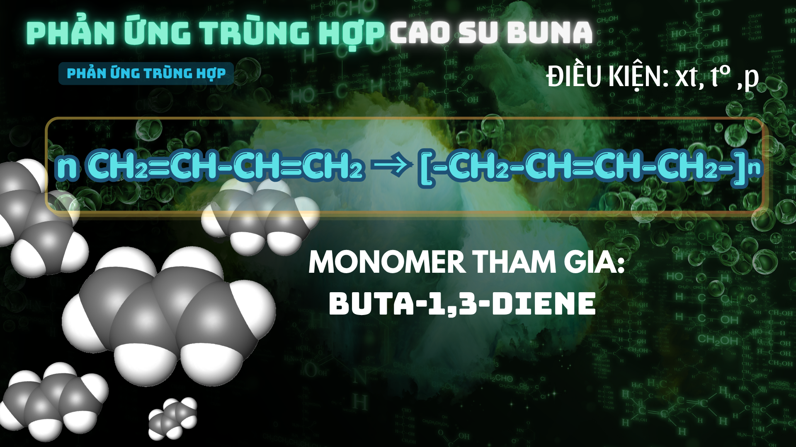

Cấu Trúc Bài Thuyết Trình (6 Phần Trọng Tâm)
Khái Niệm, Tính Chất Vật Lí Chung Và Phân Loại Cao Su
Định nghĩa tính đàn hồi, độ dẻo, cách điện, khả năng hòa tan và 2 nhóm cao su.
Cao Su Thiên Nhiên
Nguồn gốc mủ cây, cấu hình cis-1,4-polyisoprene, tính chất lí – hoá và ứng dụng.
Cao Su Tổng Hợp
Khái niệm, 3 lí do cần sản xuất và 4 loại thường gặp (Buna, Buna-S, Buna-N, Chloroprene).
So Sánh Cao Su Thiên Nhiên Và Cao Su Tổng Hợp
Đối chiếu 6 tiêu chí: Nguồn gốc, thành phần, mắt xích, tính chất, nguyên liệu, ứng dụng.
Quá Trình Lưu Hóa Cao Su
Khái niệm, điều kiện 150 °C (2–3% S và 30% S tạo ebonit), bản chất cầu nối –S–S–.
Ứng Dụng, Vai Trò Và Vấn Đề Môi Trường
4 lĩnh vực ứng dụng đời sống, thực trạng ô nhiễm và hướng xử lí bền vững.


I. Khái Niệm Và Phân Loại Cao Su
1. Cao Su Là Gì?
Cao su là vật liệu polymer có tính đàn hồi: biến dạng khi chịu tác dụng của lực và trở lại hình dạng ban đầu khi lực ngừng tác dụng.
2. Tính Chất Vật Lí Chung
• Tính đàn hồi: Có thể bị kéo giãn hoặc nén, sau đó trở lại hình dạng ban đầu.
• Tính dẻo, cách điện, độ bền: Có tính dẻo, cách điện và bền cơ học tốt.
• Khả năng hòa tan: Không tan trong nước. Cao su chưa lưu hóa tan được trong một số dung môi hữu cơ (benzene, toluene, xăng); cao su đã lưu hóa chỉ trương nở trong các dung môi này.
• Cao su tổng hợp: Điều chế bằng phương pháp hóa học từ các monomer, gồm cao su Buna, Buna-S, Buna-N, chloroprene,…

III. Cao Su Tổng Hợp (Khái Niệm, Lí Do & 4 Loại Thường Gặp)

1. Khái Niệm & 2. Lí Do Cần Sản Xuất
• Khái niệm: Vật liệu polymer đàn hồi được điều chế bằng phản ứng trùng hợp hoặc đồng trùng hợp các chất hữu cơ đơn giản (chủ yếu là hydrocarbon mạch hở chứa liên kết đôi liên hợp).
• 3 Lí do cần sản xuất:
1. Đáp ứng nhu cầu công nghiệp.
2. Cải thiện tính năng cơ lí.
3. Chủ động nguồn nguyên liệu.
a. Cao Su Buna — Tính Chất & Ứng Dụng
Khái niệm: Polymer tạo thành từ phản ứng trùng hợp buta-1,3-diene.
Đàn hồi khá tốt, chịu mài mòn; dùng sản xuất săm lốp xe, đế giày, băng tải và các vật dụng cao su thông thường.

V. Quá Trình Lưu Hóa Cao Su
1. Lưu Hóa Là Gì? & 2. Điều Kiện
• Khái niệm: Biến cao su thô (mềm, dính, dễ chảy) thành cao su thành phẩm có tính đàn hồi cao, bền chắc và không bị tan chảy.
• Điều kiện: Đun nóng cao su thô với lưu huỳnh ở khoảng 150 °C.
• Hàm lượng S: Cao su mềm dùng khoảng 2–3% lưu huỳnh; khi dùng khoảng 30% lưu huỳnh sẽ thu được ebonit (một loại cao su cứng).
3. Bản Chất & 4. Vai Trò Của Lưu Huỳnh
• Bản chất: Chuyển cấu trúc các chuỗi phân tử từ dạng mạch thẳng (dễ trượt lên nhau, dễ biến dạng) thành cấu trúc mạng lưới không gian ba chiều vững chắc.
• Vai trò của S: Đóng vai trò những "cầu nối hóa học" (cầu nối –S–S–) gắn kết các chuỗi phân tử cao su độc lập thành một khối thống nhất.
5. Vì Sao Cao Su Sau Lưu Hóa Bền Và Đàn Hồi Hơn?
• Trước lưu hóa: Các phân tử nằm rời rạc, khi kéo dãn sẽ trượt qua nhau làm cao su biến dạng vĩnh viễn.
• Sau lưu hóa: Cầu nối lưu huỳnh giữ chặt các phân tử như một bộ lò xo; khi thả ra, mạng lưới kéo vật liệu quay về hình dạng ban đầu. Ít dính khi nóng, ít giòn khi lạnh và không tan trong dung môi hữu cơ (chỉ trương nở).
Bước Ngoặt Năm 1839 Của Charles Goodyear
• Trước khi có lưu hóa: Cao su tự nhiên trời nóng thì mềm nhão, trời lạnh thì cứng giòn và dễ nứt.
• Năm 1839, Charles Goodyear đun nóng hỗn hợp cao su với lưu huỳnh và phát hiện cấu trúc mạng không gian bền nhiệt → đặt tên là Lưu hoá (Vulcanization).
Thành Quả Của Sự Kiên Trì Khoa Học
• Phát minh lưu hóa là kết quả của nhiều năm thử nghiệm kiên trì liên tục.
• Tên thương hiệu Goodyear Tire & Rubber Company được đặt để vinh danh Charles Goodyear dù ông không phải là người sáng lập công ty đó.


VI. Ứng Dụng, Vai Trò Và Vấn Đề Môi Trường
Đóng vai trò cực kì quan trọng nhờ các tính chất ưu việt: đàn hồi cao, không thấm nước, cách điện, cách nhiệt tốt và ít bị mài mòn.
Lốp xe ô tô, xe máy, xe đạp, đệm giảm xóc,…
Găng tay y tế, ống truyền dịch, ống nghe, nút cao su đậy lọ thuốc tiêm,…
Băng tải vận chuyển nguyên vật liệu, đệm cao su đặt dưới chân máy móc nặng,…
Giày dép, đệm mút, gối cao su, băng thun, găng tay cao su rửa bát,…

3. Vấn Đề Môi Trường Liên Quan Đến Sản Xuất, Xử Lí
• Ô nhiễm nguồn nước: Nước thải từ quá trình chế biến mủ cao su gây ô nhiễm nguồn nước.
• Ô nhiễm không khí: Quá trình lưu hóa và đốt nhiên liệu trong nhà máy phát sinh khí thải gây ô nhiễm không khí.
• Không tự phân hủy: Cao su có cấu trúc bền vững, không tự phân hủy sinh học trong tự nhiên (có thể mất hàng trăm năm).
4. Hướng Xử Lí Bền Vững
• Tái sử dụng làm vật liệu: Băm nhỏ lốp xe cũ để làm nguyên liệu trải đường giao thông, làm thảm cao su cho sân bóng,…
• Cao su tái sinh: Tái chế thành cao su tái sinh; hạn chế đốt lốp thải vì sinh khí độc.
• Công nghệ sạch: Sử dụng công nghệ xử lí nước thải khép kín, giảm thiểu phát thải ra môi trường.